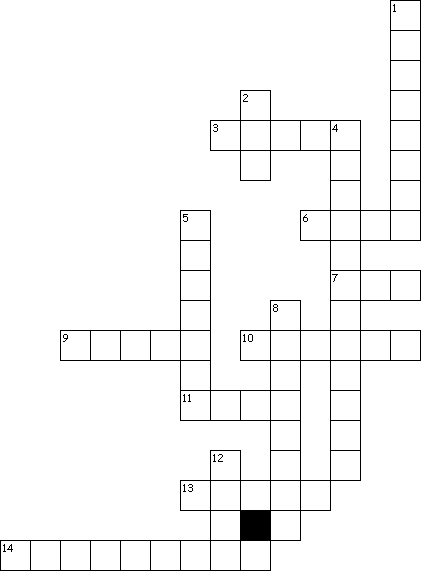

This Week: 1
Kings 19:1-4, (5-7), 8-15a
and Psalms
42 and 43
or Isaiah
65:1-9
and Psalm
22:19-28,
Galatians
3:23-29,
Luke
8:26-39
Middle-School Pew-work
In
what way do we, as Christians, succeed, and in what way do we fail,
to live up to the challenge that “There is neither Jew nor
Greek, there is neither bond nor free, there is neither male nor
female”?
________________________________________________________________________
________________________________________________________________________
________________________________________________________________________
________________________________________________________________________
________________________________________________________________________
________________________________________________________________________
________________________________________________________________________
|
 |
Across 3. people who inherit |
|
Down 1. washed from sin Created by Puzzlemaker at DiscoverySchool.com
|
Next week: 2 Kings 2:1-2, 6-14 and Psalm 77:1-2, 11-20 or 1 Kings 19:15-16, 19-21 and Psalm 16, Galatians 5:1, 13-25, Luke 9:51-62